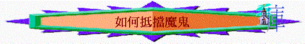

「吃晚飯的時候(魔鬼已將賣耶穌的意思，放在西門的兒子加略人猶大心裏)」 約13:2
很難想像一個跟主耶穌有一段日子的門徒，竟然會賣耶穌；更意想不到的是魔鬼竟可不知不覺走到人的心中，將一個很恐怖、很敗壞的意念放在人心中，牠竟然可以靜悄悄入到人最深處。猶大竟然毫無防衛力，就宣告失敗！好像日軍在無聲無色中可以偷襲珍珠港，強如美國也要跨台！的而且確，在信仰路中，即使我們有很多經驗，信主的日子也不淺，也成為一家之主，又成為家中的管教者，但我們不得不承認，撒但如咆哮的獅子，遍地遊行，很多時候，就是一個意念，不知不覺的意念，幾多經驗的我們也都跌倒了，但我們是否注定軟弱呢？是否不還擊？怎樣可以抵擋牠？感謝神，從聖經中，可給我們幾個得勝抵擋魔鬼的秘訣。
1) 羔羊的血
「弟兄勝過牠，是因羔羊的血，和自己所見證的道……..」啟12：11
從前看一些恐怖電影(未信主前)，主角與惡魔爭戰，往往最後出到「十字架」道具，就可以得勝。在現實生活中，或許我們不是有很多巨型木製十字架、也沒有很多像立陶苑十字架山上形形式式的十架，但我們有的是更能勝過這些的武器─羔羊的血。無錯，我們要承認偶然又犯錯了、又亂發了脾氣，理性想愛主但心靈卻不愛、又說謊了、立了志不犯又失敗了，但每一次來到施恩座前，羔羊的血，仍歷久有果效，任何內咎，控告，也可消除；不知我們最近有否靠羔羊的血勝過，潔淨我們的軟弱呢？
2) 神的道
另外，恐佈片的主角往往靠一些神父手執聖經驅魔，但現實中，我們知道聖經對驅邪沒有多大幫助，唯有聖經內的神之道，如活在人心，如果那人信了主很多年，仍高舉神的話語，仍以神的話語為工作，教養之準則，那人就可得勝，不知大家有否試過，當讀經馬虎時，聽道不入心時，神的道好像不在心中，那段日子失敗的機會也相對提高，不知我們最近對神的道反應又如何呢？
３) 靠主
「我還有末了的話，你們要靠著主，倚賴他的大能大力，作剛強的人」
以弗所書6:10
作為父母，應更清楚何謂「靠主」，Baby本身很軟弱，自我防衛能力比大人低，但當他們在母親懷裡，完全投靠，如斷過奶的嬰孩，則最安全，靠主就是這個意思，幾時覺得自己OK，自己「掂」，往往是失敗開始，勇敢承認自己是不堪一擊的人，完全放低自己，投靠主，每天向主說聲：「主啊！今天沒有你，我不能作剛強的人，我不可以沒有你，求你幫我不遇見試探，使我得勝，屬靈的簡單方法，最老新常談之道往往是最有效之法！不知我們每天是否真正的靠主呢？」
４）裝備
「要穿戴神所賜的全副軍裝，就能抵擋魔鬼的詭計。」
有時，在街上，很佩服一些警察，大熱天時（超過３０度），但仍穿著似乎十分焗身又累贅的制服，佩帶一定數目的裝備，但無論天氣有多酷熱，他們也不能隨便放低任何物件，這些物件對執行任務有很大的幫助。在信仰路上，信得越久，或許我們會有一種感覺：信仰是自由的，行天路也不要太累贅，隨心裏方式，只要不違背真理就可以。但要面對屬靈氣惡魔，我們卻不可以怕麻煩，聖經說要「穿上全副軍裝」，一件也不能少，要有裝備，不要以為已經足夠，而是不斷加添、穿上，加上什麼？要加上真理、要加上公義、要加上福音、更要加上信德（信心），一個基督徒若踏實，不斷追求以上幾方面，他的軍裝會十分堅固；相反，若他被忙碌所佔據，忽略了自己的追求，很久也沒有認真追求生命，信心的事，過得一日就一日，他慢慢一件一件裝備失去，漸漸會完全赤身迎戰撒但，必走上失敗之路；所以怎樣忙碌也好，不要忽略裝備，怎樣煩也好，有時都要用１５分鐘靜一靜，思想我今日追求生活如何，我的生命仍欠什麼呢？會否是公義，會否是信心呢？若發現，要配給裝備(可能會要用一些時間及代價)，但是值得的！
最近時常從報紙，從外間聽到很多信徒跌倒的消息，有時自己也會灰心，事實上，仰望自己真不能，但仰望那位已得勝魔鬼的羔羊，卻可以重新得力。倚靠祂的血、祂的道、祂的屬靈美德，祂自己，我們必能得勝，讓我們在工作，在家庭、在兒女中，每日靠主去抵擋這惡者！